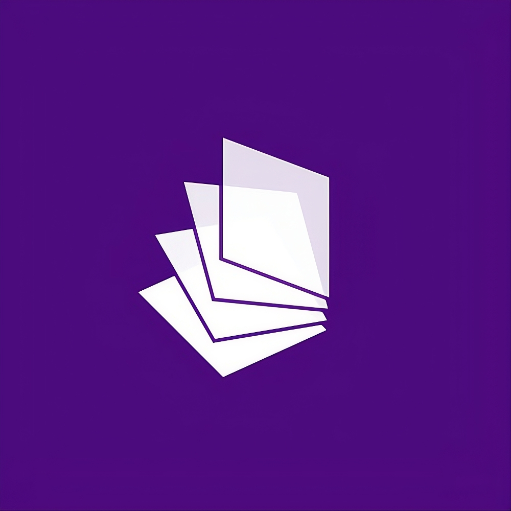

بغض النظر عن الفروض و الامتحانات الكتابية التي يخضع لها الطلاب على مدار العام، فإن تطبيق "تلاميذي" يساعدك كمعلم أو أستاذ على تحفيز الطلاب بفكرة "التقييم". إذا وصل تصنيف أي طالب إلى قيمة العتبة، فإنه يحصل على نقطة جديدة إضافية لدرجته في تلك المادة. قيمة العتبة هي اختيارك أنت كأستاذ أو معلم
Download APK